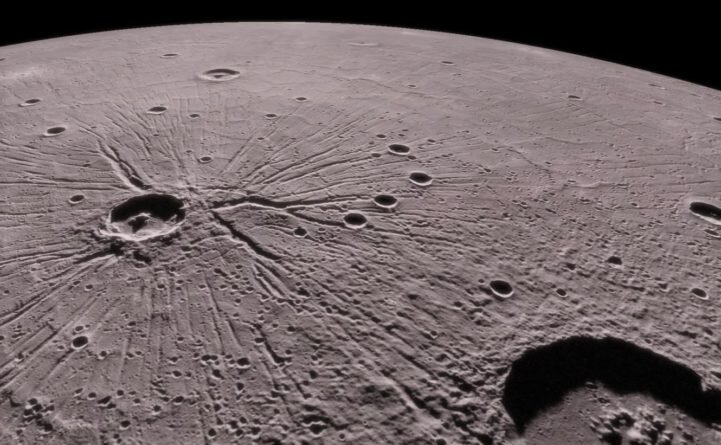

Меркурий
Меркурий — это самая маленькая и ближайшая к Солнцу планета в нашей Солнечной системе. Её поверхность похожа на поверхность Луны. Она имеет много кратеров и высокие температуры.

Меркурий — это самая маленькая и ближайшая к Солнцу планета в нашей Солнечной системе. Её поверхность похожа на поверхность Луны. Она имеет много кратеров и высокие температуры.